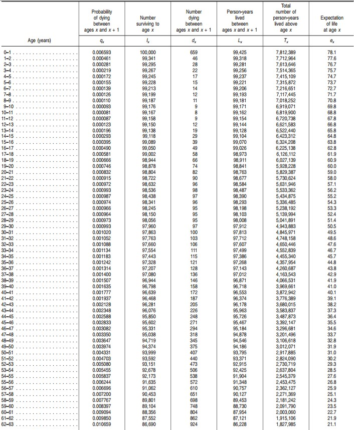
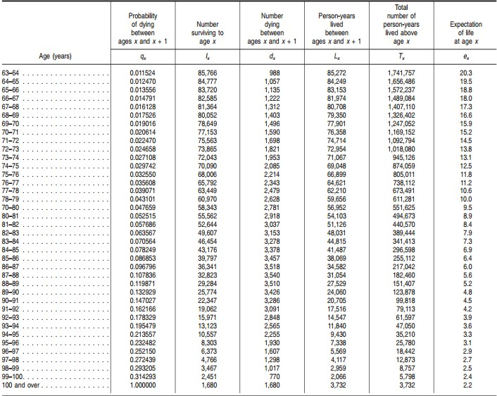

Life is full of uncertainty. An employee might be afraid of being laid off, or might expect to be promoted tomorrow. A sports team never knows how their rival will perform in the next game. Even people from the most powerful class, such as wealthy investors, Oscar nominees, and presidential candidates, cannot avoid facing uncertainty. Actuarial Science, a new profession developed in 20th century, aims to deal with uncertainties in various fields. Actuarial Science is a joint discipline, drawing from both mathematics and statistics. However, unlike some theoretical branches of mathematics dealing with very abstract topics such as Collatz’s Conjecture and Goldbach’s conjecture, actuaries are business professionals. They use theories of mathematics, statistics, and business to study and evaluate uncertainties for companies and individuals. Companies and individuals employ actuaries to analyze consequences of risk and hence to assess and mitigate risk.
According the Society of Actuaries, there are about twenty-four thousand actuarial members worldwide. Although the population of actuaries is not a large number, their work is not remote from everyday considerations. For example, in order to protect students from extremely expensive medical bills resulting from serious illness and accidental injury, most universities in the United States have policies requiring students to obtain health insurance. In addition, in Michigan, the state Department of Insurance and Financial Services states that Michigan Law requires every registered vehicle to be insured with no-fault automobile insurance. A person may be put in jail for up to one year if he or she owns a car and drives it, or allows someone else to drive it, without basic no-fault insurance.
With great advances made in medical science in the last few decades, people’s life expectancy has been increased significantly. The Congressional Research Service reported in 2006 that the life expectancy of all races in the United States was 68.1 years during 1949-1951 and was 77.5 in 2003. A more recent report by the Centers for Disease Control and Prevention stated that the life expectancy of all races in America was 78.7 in 2011. As a result of longevity, the demands of annuity have been increased. Most people will need to purchase insurance or annuities, or both, during their lifetimes. Actuaries’ responsibilities are very important to both individual buyers and insurance companies.
In order to keep the insurance market efficient, i.e. to make transactions beneficial to both the buyers and sellers of insurance, equitable premiums are important. Based on the basic theory of demand and supply, if the premium is too high, the demand for insurance goes down, and vice versa. When premiums are not equitable the market does not reach equilibrium. However, setting an equitable premium rate is not easy. Even for the same person or vehicle, rates can vary widely geographically, since many factors have to be taken into consideration when determining a rate.
The high difficulty of their work makes actuaries very well compensated. According to the 2014 Actuarial Salary Survey conducted by DW Simpson, the average salary of an Associate of the Society of Actuaries, with 2.5 to 4.5 years’ experience working as an actuary, is between 86 and 132 thousand U.S. dollars annually. A Fellow of the Society of Actuaries who has 2.5 to 4.5 years ‘working experience earns, on average, 97 – 146 thousand dollars annually.
Although actuaries are working with mathematics, statistics, and business theory, a college degree is not needed to become an actuary. Actuarial training is different in this respect from legal and medical training. (Mange 2012). For instance, the legal profession requires perspective new members to take the Law School Admissions Test and then finish a graduate program within an accredited law school before they can take a state bar exam for becoming a lawyer. The route to becoming a doctor is much longer. After taking the Medical College Admissions Test, aspiring doctors need to complete their program and pass the United States Medical Licensing Examination (USMLE) Steps 1 and 2 while enrolled in medical school. After graduating and passing those two exams, they are required to participate in an apprenticeship program and to pass USMLE Step 3 before thay can apply for an unrestricted medical license. The relationship between the actuarial profession and academia is described as “very unusual” by Charles Trowbridge, president of the Society of Actuary (SOA) during 1974-95. Charles Trowbridge stated: “We put little or no emphasis on academic degrees, and we have no university-connected actuarial schools giving the equivalent of M.D. or J.D. degrees.”
The first actuarial professional association in the United States – Actuarial Society of America – was founded in 1899; its first examination committee was formed in 1896 (Mange 2012). In 1949, Actuarial Society of America merged with Actuarial Institute of Actuaries (AIA) to form today’s Society of Actuary. Most actuaries self-studied to become a member of the association until, in the 1950s, several universities began to offer actuarial courses. Even then, according to John Mange, not many of actuaries started their actuarial education at college.
To become an actuary, or an Associate of the Society of Actuaries (ASA), one needs to complete exams in probability, financial mathematics, models for financial economics, models for life contingencies and construction and evaluation of actuarial models. Approved coursework can sometimes be substituted for particular ASA requirements, but not for any of the five certification exams . An e-Learning course and a professionalism seminar are also required. After completing all requirements, candidates will have an approved application for admission as an Associate. Membership in ASA can be regarded as the first level of certification as an actuary. People who attain ASA designation can pursue becoming Fellows of the Society of Actuaries (FSA), FSA certification has has five specialty tracks: Finance/ERM, Investment, Individual Life & Annuities, Retirement Benefits, and Group & Health. All exams and other requirements are administered by SOA. There is no prerequisite for taking any exam. Therefore, candidates who meet all requirements can become an actuary, regardless their education. As Trowbridge said: “We rely on a professionally run (as opposed to academically run) education and qualification system.” A bachelor degree in actuarial science is not needed by an aspiring actuary. In Australia, since 1968, some actuarial exams can be replaced with university coursework. Seven years ago, The Institute and Faculty of Actuaries in the United Kingdom even approved an entire educational program for becoming an actuary. As a result of SOA’s policy regarding actuarial education at universities, relatively few universities offer undergraduate degree programs in actuarial science, and even fewer universities offer graduate degree program. One of a few such programs exists at Michigan State University. While the undergraduate degree program in actuarial science started just recently, in Fall semester 2011, and there is still no graduate degree program in actuarial science, the MSU Actuarial Club formed many years before the program started. There are many MSU students who take and pass actuarial exams, while the population of actuarial science majors is relatively small.
Survival ModelsSx(t) = 1- Fx(t) = Pr[ Tx > t ]
Fx(t) = Pr[ Tx ≤ t ]
How do actuaries at an insurance company calculate the value, and the associated pay-out amount, of an insurance policy, upon the death of the policyholder? A major assessment tool is the basic Survival Model, as well as some fundamental notation. In actuarial science, each individual’s future lifetime can be represented as a random variable. In actuarial science, (x) denotes an individual at age x. The death of (x) must occur at age greater than or equal to x. For example, an 80 years old man can pass away at the age of 80, or 80 plus a positive number, but not at an age less than 80. Let Tx denote the future lifetime of (x) and Pr[event A] denote the probability that event A occurs. Pr[ Tx ≤ t ] is then the probability of an x-year-old individual will die within at most t years of the moment at which the probability is being evaluated.
Lifetime Distribution function: Fx(t) = Pr[ Tx ≤ t ]
Fx(t), defined above, is called the Lifetime Distribution Function, and represents the probability that an individual of age x dies before reaching age x + t. For instance, F60(20) = Pr[ T60 ≤ 20 ] = 0.09 indicates that the probability a 60 years old person dies before age 80 (60 + 20) is 9 percent.
In football games or other sports, coin flipping is used to determine which team will have a ball first and which side of the field each team will play on. Coin tossing is an easy and unbiased way to decide between two arbitrary options. For a fair coin, the probability of getting either a heads or tails result is 50 percent. We require that the sum of all possible outcomes is 100%, or, equivalently, 1. So, for an unfair coin that had a 70 percent chance of returning a result of heads, the probability of getting a tails result is 30 percent. The probability of getting a tails must be one minus the probability getting a heads as no other outcomes are possible – a coin flip results, in our model, in either a heads or a tails result. This rationale works for any probabilities, including survival models, since human beings are either alive or dead. If the probability that a 60 years old individual cannot survive beyond age 80 is 9 percent, the probability that this person will survive beyond age 80 is 91 percent = 100 percent minus 9 percent.
Survival Function: Sx(t) = 1- Fx(t) = Pr[ Tx > t ]
A function like Sx(t), defined above, is called a Survival Function. Sx(t) denotes the probability an individual aged x does survive beyond age x + t. This is exactly 1 minus the probability associated with Fx(t). The relationship between the Survival Function and the Lifetime Distribution Function is Sx(t) = 1- Fx(t).
Life Table
Actuaries assemble data and make computations, summarized in table form, enabling them to more easily compute survival probabilities of entire populations and sub-populations. For example, the United States Center for Disease Control and Prevention released a life table for the total population of the country in 2008. The table contains several important pieces of information: “probability of dying between ages x and x+1 (qx); number surviving to age x (lx); number dying between ages x and x+1 (dx), person-years lived between ages x and x+1 (Lx), total number of person-years lived above age x (Tx), and expectation of life at age x (ex).”
Table 1. Life table for the total population: United States, 2008 
Table 1. Life table for the total population: United States, 2008 – Con. 
From the table we see that the probability of death within a year of a given moment decreases from age 0 to age 10, and then increases from age 10 to age “100 and over.” Children at age 10 have the minimum probability (0.000081 = 0.0081%) of dying within the next year; a new born infant, while expected to be alive in 78.1 years, faces a 0.6593 percent (i.e., 6.5 in a thousand) chance of dying before his or her first birthday. Additionally, in a population of one hundred thousand people born in the same year, on average, more than 1000 people will die each year when their cohort is at age 64, two years more than the early retirement age of 62. The number of people in the group who will die in the forthcoming year will be double in 10 years - more than 2000 people die each year when this group is at age 74.
In actuarial science, the probability of a life ending within one year, denoted by qx, is very important, since it can be used to evaluate the probability an individual of arbitrary age survives for an arbitrary number of years. To see this, suppose the odds that I win the lottery are one in a million. Then the odds that I win the lottery twice would be one in a million multiplied by one in a million. The odds that I, at age 60, make it to the age of 62 must equal the odds that, at age 60, I make it to the age of 61, multiplied by the odds that, at age 61, I make it to the age of 62. Of course, the probability of surviving between 61 and 62 is zero, for a give person, if that person dies before the age of 61 – it is understood that these probabilities are conditional probabilities, and that the probability one survives between the age of 60 and 61, for example, is really the probability that one survives between the age of 60 and 61 given that he has survived until the age of 60. For example, qx in a life table can be used to compute S60(20) – the probability a 60 years old person survives at least another 20 years.
Using the idea that the probability of an event equals 1 minus the probability that event does not occur, and the idea that one is either dead or alive, we can use the q’s to tabulate the values of a Survival Function, of the form Sx(1) = 1- qx. With this equation, the probabilities of surviving from age 60 to 61, 61 to 62, etc, up until 79 to 80, for instance, can be computed as:
S60(1) = 1- q61
S61(1) = 1- q62
S62(1) = 1- q63
S63(1) = 1- q64
.
.
.
S76(1) = 1- q77
S77(1) = 1- q78
S78(1) = 1- q79
S79(1) = 1- q80
According to another property of probability, the probability of multiple independent events (such as event A, B, C etc.) occurring is the product of the probability of each single event occurring. For example, Pr[ event A and B occur ] = Pr[ event A occurs] * Pr[ event B occurs] . Therefore, S60(20) can be computed by the product of S60(1), S61(1), S62(1), S63(1), …, S79(1).
In mathematical expression this would typically be written as:
S60(20) = S60(1)* S61(1)* S62(1)* S63(1)* …*S79(1) =(1- q61)* (1- q62)* (1- q63)* (1- q64)*…*(1- q80)
The Actuarial Present Value of a Whole life Insurance Policy
To introduce the Actuarial Present Value (APV) of a Whole Life Insurance Policy, an alternative representation of a Survival Function needs to be stated.
Survival Function: Sx(t) = tpx
A whole life insurance policy becomes a claim when the policyholder dies, and a benefit is paid at that time. For bonds and mortgages, the present value of the bond or the mortgage can be calculated given fixed payment durations and interest rates. However, the present value of a single whole life insurance policy is uncertain until the death of the policyholder. The actuarial present value of a benefit is a random variable and a function of the time of death. Therefore, for the insurance policy, it is uncertain if one single policy will be profitable or not. The means of ensuring an insurance company does not lose money are not discussed in this paper. Calculating the present value of a given insurance policy upon the death of the policyholder is a very important task for an insurance company seeking to constantly analyze and adjust its policy prices in order to ensure its own profitability. The Actuarial Present Value of whole life insurance in continuous case denotes Ax
Actuarial Present Value of Whole life insurance (continuous case):

where e-δt is the present value of a benefit of $1 payable at the time the policy holder dies and μ(x+t) is the force of mortality at age x+t.
Mortality